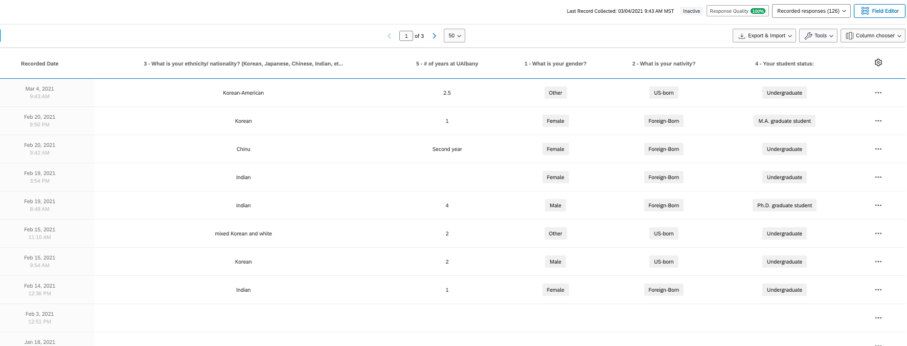
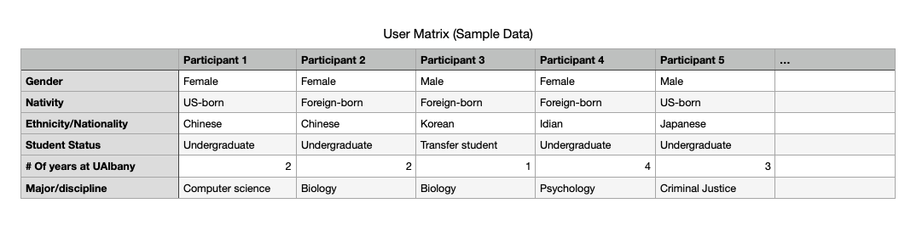
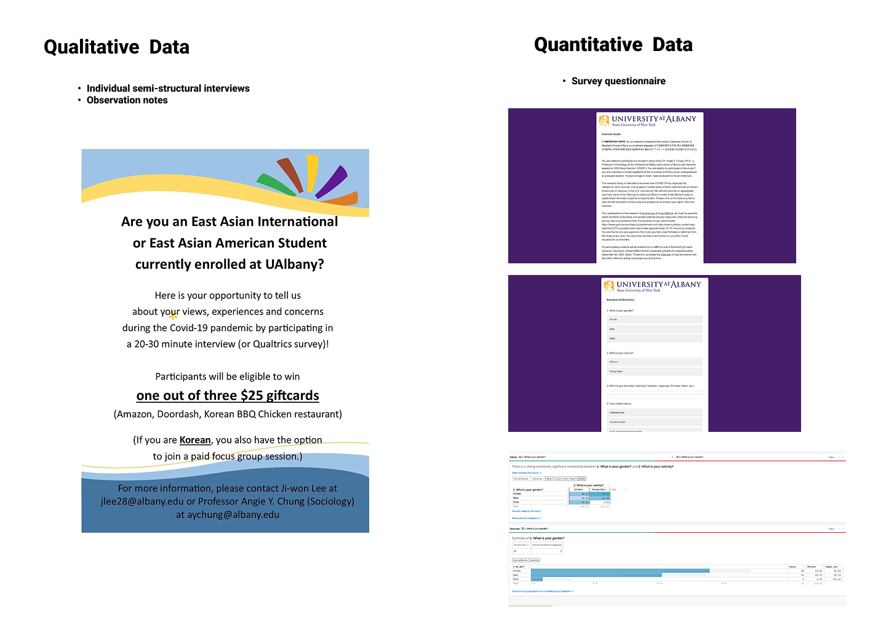

Mango Try: Mobile and digital deign for JD.com
👩🎓My role: lead UX researcher and designer
At the end of 2014, JD, a leading e-commerce company in China, proposed the "3F" strategy for rural e-commerce. In early 2016, JD signed the Strategic Cooperation Framework Agreement on Targeted E-Commerce Poverty Alleviation with the State Council Leading Group Office of Poverty Alleviation and Development.
In 2006, our team collaborated with JD to help client the
government of Tiandong
County, Guangxi, China to develop a digital
mobile application to promote their mango
products. We designed a mobile application called  Mango Try,
which incoporate entertainment features, product sells,
product information, and product reviews.
Mango Try,
which incoporate entertainment features, product sells,
product information, and product reviews.
Timeframe
March 2016 - September 2016
UX Skills
- Persona
- Market research
- Design
- Wireframing
Tools
- Figma
Challenge
While Tiandong County is well known for its mangoes, the local government recognized the need to evolve in the digital age. Embracing technology had become urgent, prompting them to develop a mobile application to promote their mango products and expand their market reach—especially among younger generations.

SWOT
was used to analyze strengths and
weaknesses

We developed buyer personas to truly and accurately target marketing communications
Through marketing research, we tried to understand target buyers' needs and pain points of online shopping. Most of them concerns centered around the convinience, freshness of products, and the shipping fees.
Process
We conducted student and organizational research, created a survey, earned IRB approval, recruited participants, collected data, and analyzed the data which quickly turned into actionable recommendations to university leaders.
Research activities I participated in:
- Designed and reviewed questionnaires; launched a pilot study to test the validity and reliability of the survey.
- Recruited among the campus population and surveyed 100+ East Asian students about the problems the face.
- Conducted and transcribed 10+ semi-structured interviews with students and staff.
- Collaborate with the IT team to publish the survey and distribute it to students.
- Collected and visualized data.
Process
A user martix was established based on the pilot study results. After IRB (Institutional Review Board) apporoval, we recruited 126 users for survey and interviews that fell within the user matrix.


Mixed methods study to gather student data and pain points:

Outcome
Based on the survey and interview results, we identified the following issues:
- Student health service was not responsive to students' needs during the pandemic.
- Social support needed to be improved for East Asian students.
We made a video inviting students to share their stories about racism to the university leaders and Albany society:
Progress toward goals:
- Deepened Understanding of Student Challenges. Through the mixed-methods survey of East Asian students, we successfully identified key academic, social, and psychological challenges faced during the COVID-19 pandemic. The qualitative responses provided rich insights into students' emotional distress, feelings of isolation, and experiences with anti-Asian sentiment.
- Collected Actionable Data to Inform Policy.We gathered data from over [insert number] participants across multiple institutions, achieving representation across different nationalities, education levels, and fields of study. The analysis revealed patterns in student needs, particularly around mental health support, communication barriers, and the impact of online learning environments.
- Strengthened Mixed-Methods Research Capacity.The project utilized both quantitative analysis (descriptive statistics, cross-tabulations) and qualitative coding, enhancing our ability to triangulate findings and ensure data validity. Our team also improved internal workflows for coding open-ended responses and integrating results into policy briefs.
- Dissemination and Institutional Impact. Preliminary findings were shared with student affairs and international student offices at UAlbany, sparking interest in improving campus communication and support services. Plans are underway to present the results at a regional education conference and to publish a summary report accessible to stakeholders and peer institutions.
“Libin is an exceptional researcher and collaborator
with a sharp analytical mind and deep
cultural insight. Her ability to design thoughtful
surveys, conduct rigorous mixed-methods
analysis, and synthesize complex findings was
instrumental to the success of our study on East
Asian student experiences during the pandemic.”
—
Dr. Angie Chung, Lead of the project, Professor
of Sociology,University at Albany,
SUNY